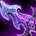
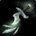
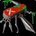

敏锐贼 PvP 判断训练器
这版本唯一要记住的一句
敏锐失去了持续压力。
你不再是磨死人，你是攒一个窗口、一次结账。
你不再是磨死人，你是攒一个窗口、一次结账。
为什么？12.0 拿掉了三样东西
割裂伤 / 鞭笞 / 死亡标记 全没了▸
12.0 移除了 割裂伤（Rupture）、鞭笞（Flagellation）、死亡标记（Symbols of Death），
结果是：敏锐变成纯爆发型、几乎没有 ramp。窗口外你打出的伤害基本会被治疗抹平——所以窗口外的全部意义只有一个：为下一个窗口做准备。
该不该开？勾一下就知道
勾掉几条，就有多少胜算。
开场决策器
现在的局面满足哪几条？
三个时钟
三个独立的倒计时，任何一个错位这一轮就废了。

爆发时钟你唯一的杀人手段▸转起来了就必须有事做——空转一轮等于白送对面一分钟。
诡术师层数怎么用▸
目标身上的递减（DR）按 100% → 50% → 25% → 免疫 衰减。
窗口打开时如果目标已经吃了两个眩晕，你的
把
本版定盘（top50 三对三实测）

英雄天赋：诡术师top50 里 50 人全用，没有取舍空间▸诡术师（Trickster）——top50 三对三里 50 人全用，死亡追猎者是 0。这不是"推荐"，是唯一解。

PvP 天赋：两必带 + 一个按对面选烟雾弹 · 先发制人 · 第三格看对面▸第三格二选一：
对面伤害来自武器 → 带  卸除武装
卸除武装
6 秒缴械 / 45 秒冷却。对战士、猎人、贼、死亡骑士极强——没武器就没伤害。注意它不影响施法，对法系几乎无用。
对面难杀（有强治疗）→ 带 偷天换日 ▸
给队友加 15% 伤害 6 秒。当核心矛盾是"打不穿治疗"时，这一格比缴械值钱。